ECG Blog #456 — Nhồi máu cơ tim cấp hay bệnh lý khác?
Ca hôm nay do BS. Magnus Nossen (ở Fredrikstad, Na Uy) đóng góp. BS. Nossen đang ngồi trước máy tính — xem lại điện tâm đồ của những bệnh nhân mới nhập khoa nội trú của nhóm anh. Anh bắt gặp điện tâm đồ trong Hình-1 — ghi từ một phụ nữ ở độ tuổi 70 nhập viện vì CP (đau ngực – Chest Pain) mới xuất hiện.
CÂU HỎI:
- BẠN sẽ diễn giải điện tâm đồ trong Hình-1 như thế nào?

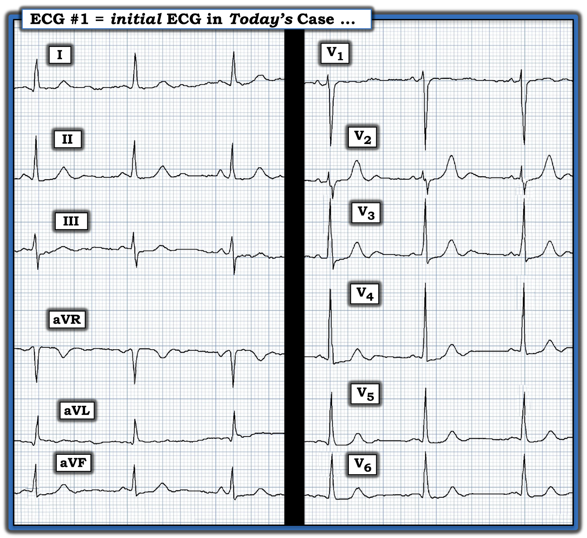
SUY NGHĨ CỦA TÔI về điện tâm đồ #1:
Nhịp là nhịp chậm xoang với tần số ngay dưới 60 lần/phút. Các khoảng (PR, QRS, QTc) và trục bình thường. Không lớn buồng tim.
Về Thay đổi Q-R-S-T:
- Có thể có sóng Q nhỏ (sóng q vách bình thường) ở một số chuyển đạo bên.
- Tăng tiến sóng R — cho thấy vùng chuyển tiếp sớm, với sóng R đột ngột chiếm ưu thế ngay từ chuyển đạo V3. Tôi băn khoăn về vị trí đặt điện cực trước tim — vì phức bộ ở V2 nhỏ bất ngờ, bị kẹp giữa sóng S sâu ở V1 và sóng R đột ngột cao ở chuyển đạo V3.
Dấu hiệu nổi bật nhất liên quan đến Sóng ST-T:
- Nhiều chuyển đạo trên điện tâm đồ #1 cho thấy đoạn ST thẳng đuỗn kèm ST chênh xuống, có vẻ rõ nhất ở chuyển đạo V3 và V4 (mũi tên XANH trong Hình-2).
- Phức bộ QRS nhỏ ở chuyển đạo V2 đi kèm một sóng T lớn không tương xứng và nhọn — hình ảnh này cũng có nhưng ở mức độ ít hơn tại các chuyển đạo ngực lân cận.
- Cũng thấy sóng U nổi bật (rõ nhất ở chuyển đạo V2,V3 — nhưng cũng thấy ở chuyển đạo I, II).
Nhận định của tôi về điện tâm đồ #1:
- Tôi cùng mối lo với BS. Nossen rằng ST dẹt và chênh xuống ở chuyển đạo V2 đến V6 — kèm sóng T dương lớn không tương xứng ở chuyển đạo V2 ở người phụ nữ lớn tuổi bị CP mới xuất hiện này — gợi ý mạnh OMI (nhồi máu cơ tim cấp do tắc – Occlusion-based acute MI) thành sau, có thể nay đã có sóng T tái tưới máu ở chuyển đạo V2 đến V4. Liệu đây có phải là một OMI thành sau đã bị các bác sĩ điều trị ban đầu bỏ sót?
- LƯU Ý bổ sung: Giả sử điện giải huyết thanh (K+, Mg++) bình thường — thì sóng U dương ở chuyển đạo II,V2,V3 rõ ràng lớn hơn mong đợi.

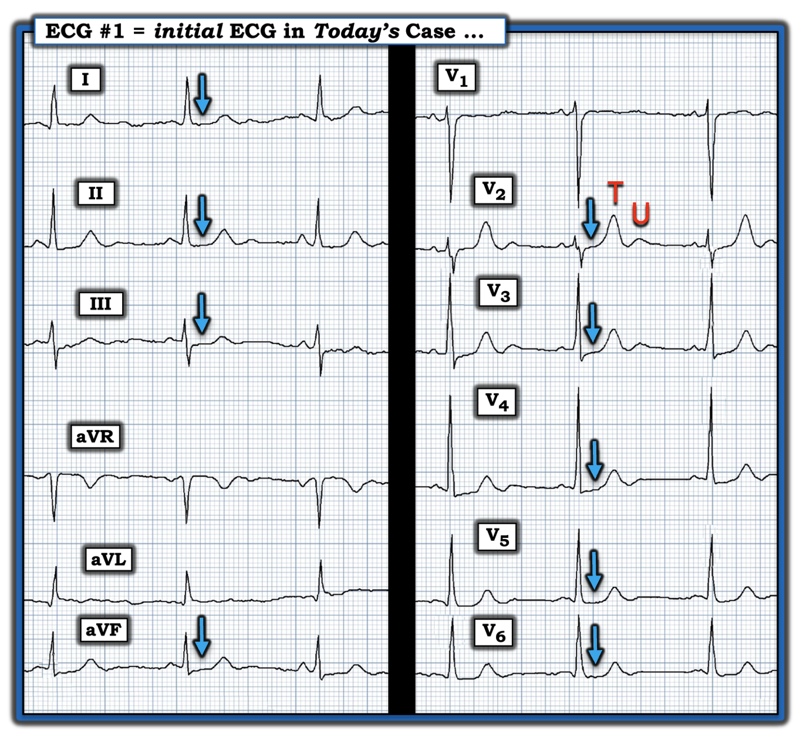
Điện tâm đồ được ghi lại:
Như thấy trong Hình-3 — khi xem lại hồ sơ, BS. Nossen phát hiện bệnh nhân này còn có bản ghi thứ 2 ( = điện tâm đồ #2 — ghi 21 giờ sau điện tâm đồ #1).
CÂU HỎI:
- Điện tâm đồ ghi lại này (trình bày bên dưới trong Hình-3) — có làm bạn thay đổi nhận định về OMI thành sau mới xảy ra, nay có sóng T tái tưới máu hay không?

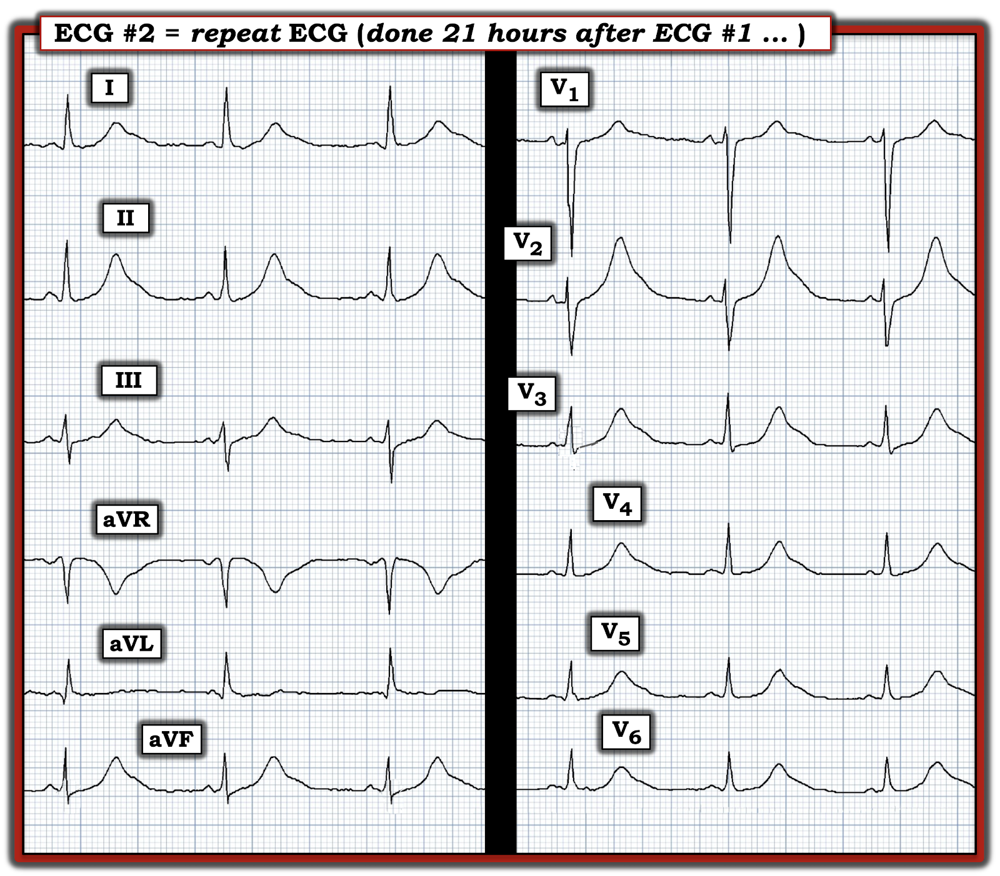
SUY NGHĨ CỦA TÔI về điện tâm đồ #2:
Hình ảnh điện tâm đồ đã thay đổi mạnh mẽ kể từ bản ghi ban đầu (Xem so sánh giữa 2 bản ghi này trong Hình-4 bên dưới). Ở thời điểm này — điện tâm đồ #2 không còn giống một OMI thành sau mới xảy ra có sóng T tái tưới máu, mà thay vào đó lại giống Takotsubo CM (bệnh cơ tim – CardioMyopathy).
- Sóng T đã trở nên đầy đặn lên rõ rệt ở điện tâm đồ #2 — nay kèm kéo dài đáng kể khoảng QT.
- Nếu trước đó tôi không thấy các sóng U nổi bật ở điện tâm đồ #1 (mũi tên XANH) — thì tôi đã không biết rằng cái "vai" (chỗ nhô) thêm vào thấy gần chân phần đi xuống của sóng T ở nhiều chuyển đạo trên điện tâm đồ #2 (thấy rõ nhất ở các chuyển đạo có mũi tên ĐỎ) — là kết quả của sự hòa lẫn giữa sóng T dương và sóng U, cả hai đều đã lớn lên đáng kể kể từ khi ghi điện tâm đồ #1. Như vậy, nói cho chính xác — thay vì QT kéo dài đáng kể, cái chúng ta thấy trên điện tâm đồ #2 là QT-U kéo dài đáng kể.
- LƯU Ý #1: Takotsubo đôi khi có thể đi kèm sóng U lớn — vì vậy, diễn tiến tới sóng T dương nổi bật kèm QT-U kéo dài đáng kể mà nay ta thấy trên điện tâm đồ #2 hoàn toàn phù hợp với bệnh cơ tim Takotsubo.
- LƯU Ý #2: Nhìn lại điện tâm đồ #1 — các thay đổi điện tâm đồ của bệnh cơ tim Takotsubo đã bắt đầu diễn tiến từ 21 giờ trước, lúc ghi điện tâm đồ #1 (tức là, Hầu như mọi chuyển đạo có sóng T dương trên điện tâm đồ #1 đều đã có sóng T hơi "béo" ở đỉnh và rộng ở chân hơn mức có thể mong đợi — và các sóng U đánh dấu mũi tên XANH trên điện tâm đồ #1 cũng đã lớn hơn mức thường thấy khi K+ huyết thanh bình thường).
- LƯU Ý #3: Vì bệnh cơ tim Takotsubo nhìn chung có tiên lượng tốt hơn so với nhồi máu cơ tim do tắc động mạch vành cấp — BS. Nossen và tôi thấy yên tâm khi biết rằng không có OMI cấp nào bị bỏ sót (và thông tim không cần làm ngay).

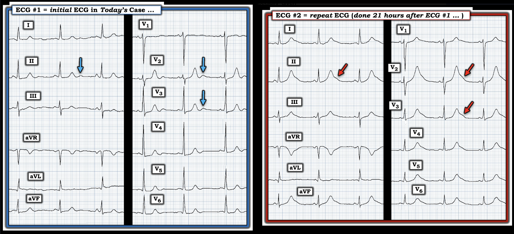
Xem lại hồ sơ kỹ hơn của bệnh nhân hôm nay:
Khi xem lại hồ sơ kỹ hơn, BS. Nossen phát hiện những điều sau:
- Troponin trong lần nhập viện này của bệnh nhân tăng vừa phải. Điều này phù hợp với bệnh cơ tim Takotsubo — vốn thường đi kèm đỉnh Troponin thấp hơn mức thấy trong các nhồi máu cơ tim diện rộng hơn (dù có một "vùng chồng lấp" về nồng độ troponin cụ thể — và một số OMI có thời gian tắc ngắn trước khi xảy ra tái tưới máu tự phát có thể chỉ biểu hiện troponin tăng rất ít).
- Điện giải huyết thanh không bất thường. Cả hạ kali máu lẫn tăng kali máu đều không giải thích được hình ảnh điện tâm đồ thấy được.
- Bệnh nhân hôm nay có tiền sử 3 lần "NSTEMI" trước đây. Mỗi lần, bà đều được thông tim — và mỗi lần, động mạch vành của bà đều thông tốt! Nhìn lại — bệnh nhân này chưa bao giờ bị nhồi máu cơ tim cấp (mặc dù lần nào chẩn đoán ra viện cũng là "NSTEMI").
- Ở mỗi lần trong 3 lần nhập viện trước được chẩn đoán "NSTEMI" — bà đều có điện tâm đồ diễn tiến tới hình ảnh điện tâm đồ điển hình của bệnh cơ tim Takotsubo (Xem Hình-5 — là một bản ghi tiêu biểu từ một trong các lần nhập viện trước đó).
ĐIỂM THEN CHỐT (PEARL) #1: Cả bệnh sử lẫn điện tâm đồ ban đầu của một bệnh nhân bị bệnh cơ tim Takotsubo đều có thể rất giống với OMI cấp. Vì vậy — lúc đầu có thể khó phân biệt 2 bệnh cảnh này.
- Đôi khi — có thể cần thông tim để loại trừ tắc động mạch vành cấp.
- Mặt khác, nếu điện tâm đồ ban đầu trông giống bản ghi trong Hình-5 (có sóng T đảo ngược lan tỏa, sâu, đối xứng kèm khoảng QT kéo dài rõ rệt) — thì chẩn đoán bệnh cơ tim Takotsubo trở nên hiển nhiên. Trong những trường hợp như vậy — chẩn đoán hình ảnh không xâm lấn (tức là, siêu âm tim; chụp CT mạch vành) có thể cung cấp đủ bằng chứng rằng chẩn đoán thật sự là bệnh cơ tim Takotsubo, đến mức không cần thông tim (nhất là khi bệnh nhân không có đau ngực do thiếu máu cục bộ).
ĐIỂM THEN CHỐT (PEARL) #2: Thuật ngữ "NSTEMI" (tức là, nhồi máu cơ tim không ST chênh lên – Non ST Elevation Myocardial Infarction) — đang bị dùng quá mức nghiêm trọng. Theo kinh nghiệm của tôi — thuật ngữ "NSTEMI" có lẽ là không chính xác trong phần lớn các trường hợp.
- Trong ca hôm nay — ở mỗi lần trong 3 lần nhập viện trước, bệnh nhân đều được chẩn đoán là đã bị "NSTEMI" — trong khi xem lại hồ sơ cho thấy rõ lần nào bà cũng bị bệnh cơ tim Takotsubo.
- Tôi đã nhiều lần điểm lại trên ECG Blog này — các ca OMI cấp bị bỏ sót và chẩn đoán nhầm thành NSTEMI (Xem ECG Blog #400 — cùng nhiều bài khác).
- ĐIỀU CỐT LÕI: Năm 2024 — chúng ta nên luôn nghi ngờ khả năng chẩn đoán nhầm mỗi khi nhãn "NSTEMI" được dùng. Chẩn đoán nhầm này bị áp dụng quá thường xuyên vì người điều trị không nhận ra rằng một bệnh sử đau ngực mới xuất hiện rồi tự hết, đi kèm "một điện tâm đồ không có gì ấn tượng" — có thể phản ánh hiện tượng "giả bình thường hóa" sau khi giai đoạn ST chênh lên đã bắt đầu tiến triển thành sóng T tái tưới máu sâu. Và rồi, quá thường xuyên, dấu hiệu "tố cáo" là sóng T tái tưới máu bị bỏ qua hoàn toàn (ngay cả khi bệnh sử và mức tăng Troponin đáng kể cho thấy điều ngược lại).
ĐIỂM THEN CHỐT (PEARL) #3: Chẩn đoán đúng cho điện tâm đồ #2 và điện tâm đồ #3 là bệnh cơ tim Takotsubo. Nhưng hãy để ý hình ảnh điện tâm đồ của 2 bản ghi này khác nhau đến thế nào!
- Điện tâm đồ #2 (trong Hình-4) — nổi bật với sóng T dương lớn kèm QT-U kéo dài đáng kể.
- Điện tâm đồ #3 (trong Hình-5) — nổi bật với sóng T đảo ngược lan tỏa, sâu và đối xứng kèm khoảng QT kéo dài rất nhiều.
- ĐIỀU CỐT LÕI: Quả thật hình ảnh điện tâm đồ có thể thay đổi khác nhau trong bệnh cơ tim Takotsubo. Một phần là do điện tâm đồ được ghi vào thời điểm nào trong diễn tiến của Takotsubo. Ngoài ra — có 2 hình ảnh điện tâm đồ riêng biệt của Takotsubo — và tùy vùng giải phẫu của tim bị ảnh hưởng, hình ảnh điện tâm đồ có thể khác nhau (Xem phần bên dưới để ôn lại các dấu hiệu điện tâm đồ của Takotsubo).

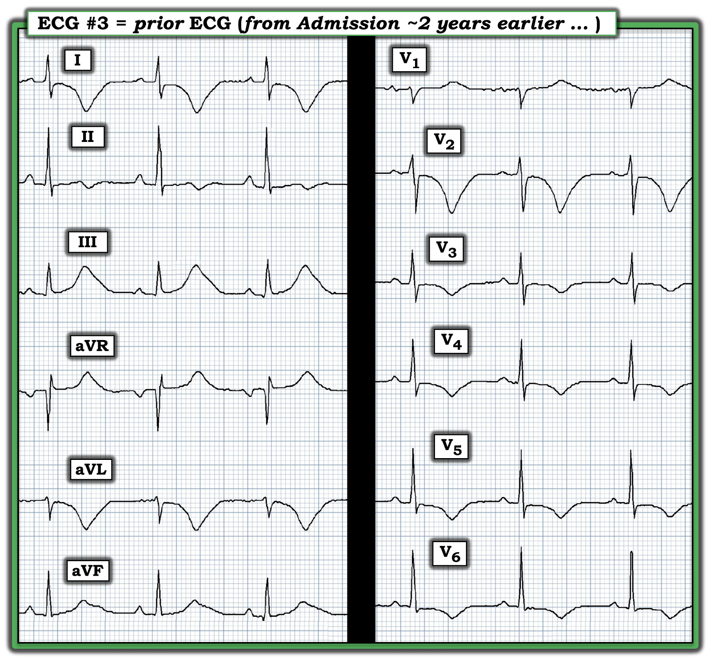
====================================
Các dấu hiệu điện tâm đồ trong bệnh cơ tim Takotsubo:
Để ôn lại, trong Hình-6 — tôi tổng hợp các dấu hiệu hay gặp nhất của 2 hình ảnh điện tâm đồ thường gặp nhất ở bệnh nhân bị bệnh cơ tim Takotsubo (mà tôi đã bàn trước đây trong ECG Blog #277).
- Như ghi chú trong Hình-6 bên dưới — 2 hình ảnh điện tâm đồ thường gặp nhất của bệnh cơ tim Takotsubo gồm: i) ST chênh lên trên điện tâm đồ ban đầu; và/hoặc, — ii) Sóng T đảo ngược sâu, lan tỏa (nhất là ở các chuyển đạo ngực) kèm QTc kéo dài đáng kể. Dù vậy — không hình ảnh nào trong số này xuất hiện trên điện tâm đồ #2 (tức là, Thay vì ST chênh lên hay sóng T đảo ngược sâu, lan tỏa — lại có sóng T dương cao quá mức ở nhiều chuyển đạo).
- XIN NHẤN MẠNH: Tôi hoàn toàn đồng ý với BS. Nossen rằng diễn tiến điện tâm đồ liên tiếp giữa điện tâm đồ #1 và điện tâm đồ #2 trong ca hôm nay gợi ý mạnh bệnh cơ tim Takotsubo (chứ không phải OMI cấp). Dù vậy — MẤU CHỐT cần hiểu là nhiều hình ảnh điện tâm đồ khác nhau có liên quan với bệnh cơ tim Takotsubo.
- Bệnh cơ tim Takotsubo điển hình biểu hiện mỏm tim phình dạng bóng kèm tăng co bóp vùng đáy. Nhưng thay vì rối loạn chức năng thất trái khu trú ở mỏm — rối loạn chức năng có thể ở vùng đáy = Takotsubo "đảo ngược" (Reverse), khi đó sẽ không có mỏm tim phình dạng bóng. Hoặc, có thể có Takotsubo giữa thất, trong đó phần giữa thất trái co bóp kém (và phình dạng bóng), còn vùng đáy và mỏm đều co bóp tốt (Xem bài ngày 24 tháng 6 năm 2014 — và Bình luận của tôi trong bài ngày 21 tháng 7 năm 2022 trên Dr. Smith's ECG Blog về các biến thể của Takotsubo).
- Vì vậy — tôi nghĩ việc QTc tăng rõ rệt kèm sóng T dương khổng lồ, "đồ sộ" mà chúng ta thấy trên điện tâm đồ #2 (nhất là khi hình ảnh điện tâm đồ này hình thành trong vòng 21 giờ kể từ bản ghi ban đầu) — hoàn toàn phù hợp với một dạng nào đó của bệnh cơ tim Takotsubo khác với 2 hình ảnh thường gặp hơn được mô tả trong Hình-6.
- Theo BS. Nossen — Takotsubo đôi khi có thể đi kèm sóng U lớn, điều này giải thích cái "vai" thêm vào làm biến dạng phần đi xuống của sóng T lớn trên điện tâm đồ #2 (rõ nhất ở các chuyển đạo có mũi tên ĐỎ trong Hình-4). Như vậy, nói cho chính xác — phần cuối của cái tưởng là sóng T thực ra là sóng U (tức là, tạo ra QT-U kéo dài đáng kể).

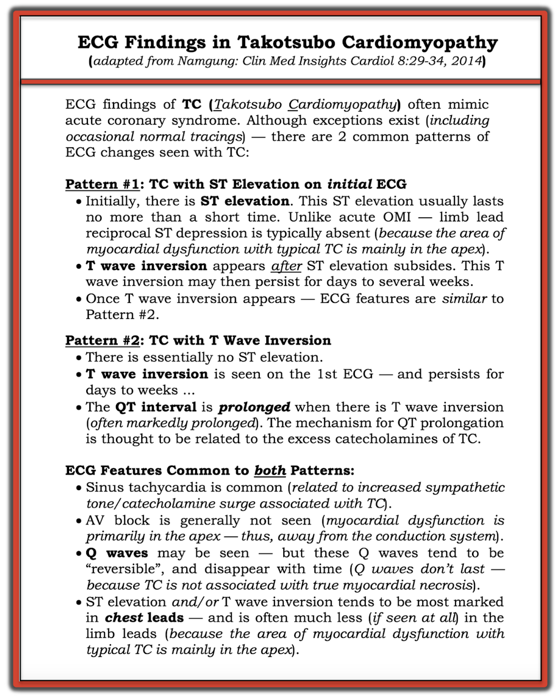
====================================
Để có góc nhìn lịch sử về bệnh cơ tim Takotsubo — tôi bổ sung 2 trang trích từ cuốn ECG-Pocket Brain ePub năm 2014 của tôi.
====================================

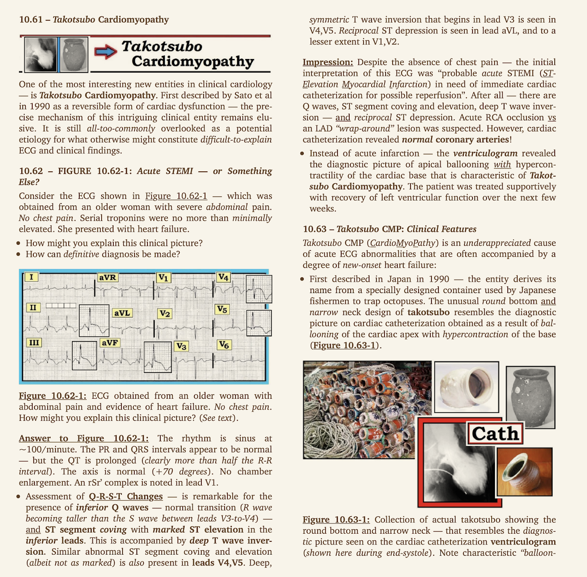

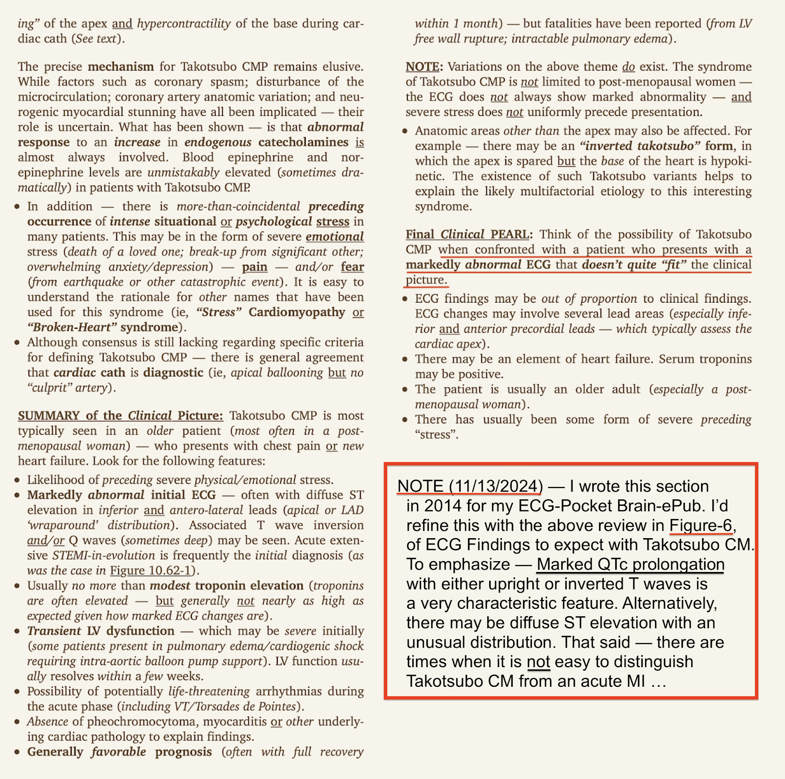
==================================
Lời cảm ơn: Xin cảm ơn Magnus Nossen (ở Fredrikstad, Na Uy) đã chia sẻ ca bệnh và các bản ghi này.
==================================

- - - - - - - - - - - - - - - - - - - - - - - - - - - - - -
PHẦN BỔ SUNG: — Diễn tiến điện tâm đồ ở một bệnh nhân Takotsubo khác:
- - - - - - - - - - - - - - - - - - - - - - - - - - - - - -
Như đã nhấn mạnh ở trên — diễn tiến các thay đổi điện tâm đồ trong bệnh cơ tim Takotsubo rất thay đổi (và phụ thuộc vào nhiều yếu tố không thể đoán trước).
- Dù vậy — tôi nghĩ sẽ thú vị nếu điểm lại các thay đổi điện tâm đồ tuần tự khi chúng xảy ra theo thời gian ở một bệnh nhân khác (không phải bệnh nhân được trình bày trong ca hôm nay) — với hy vọng điều này giúp truyền đạt một ý niệm chung về các thay đổi điện tâm đồ có thể gặp.
- XIN CẢM ƠN BS. Magnus Nossen đã đóng góp 8 bản ghi tuần tự trong ca này.

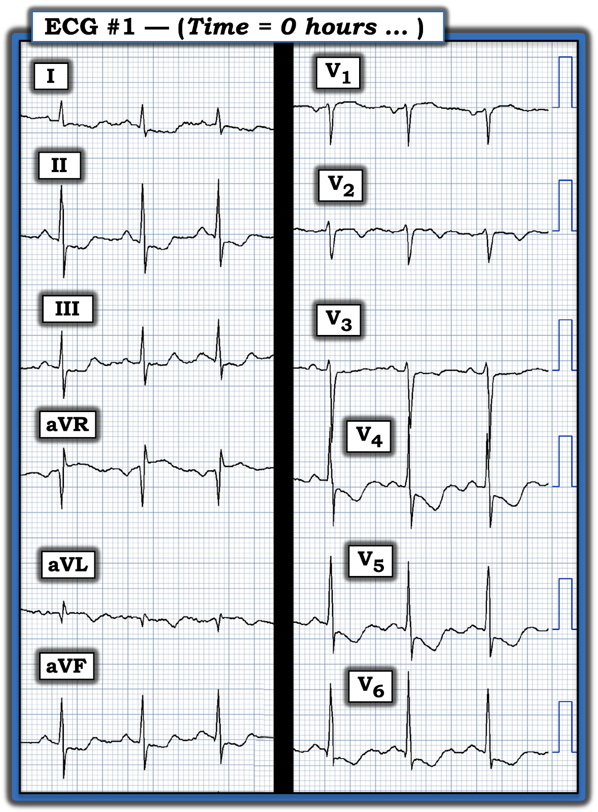

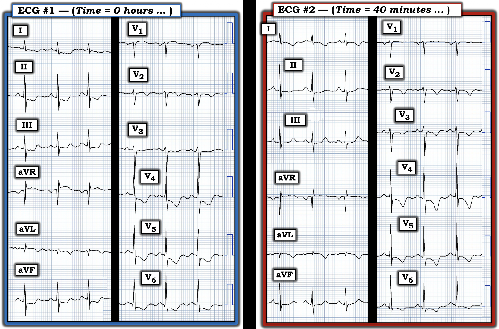

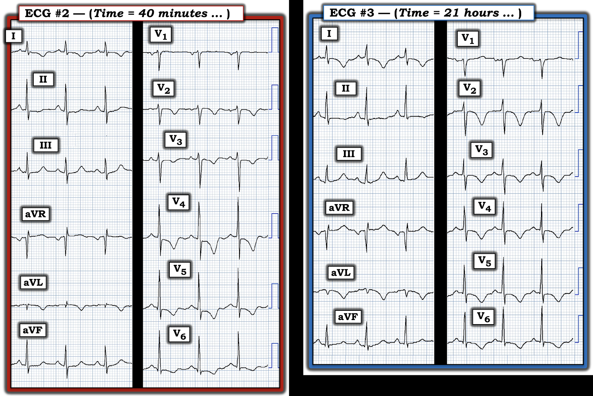

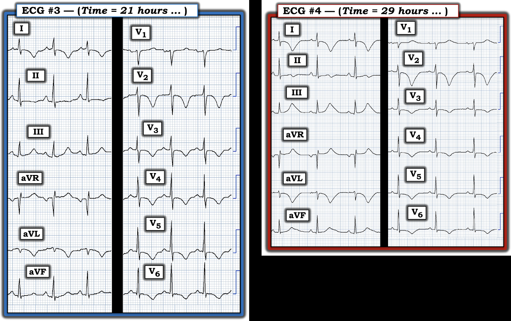

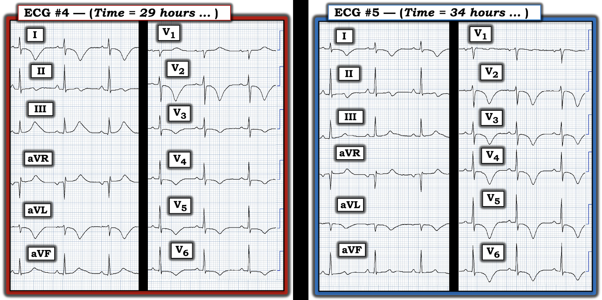

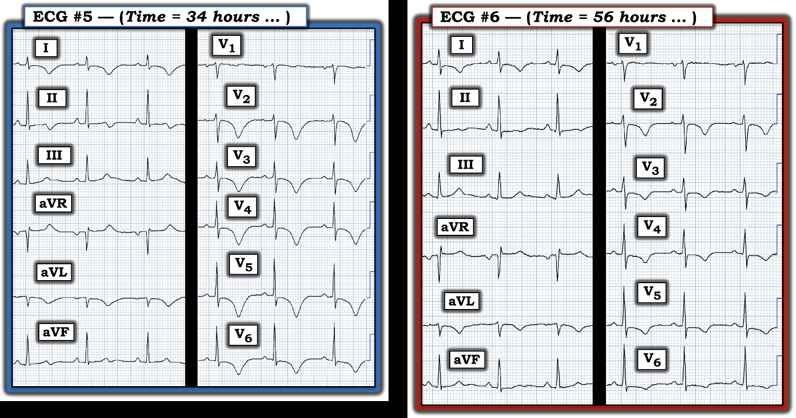

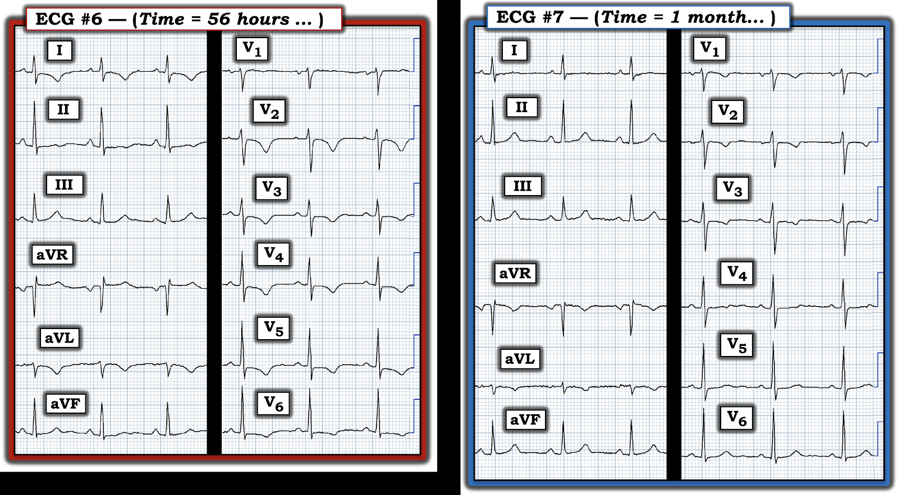

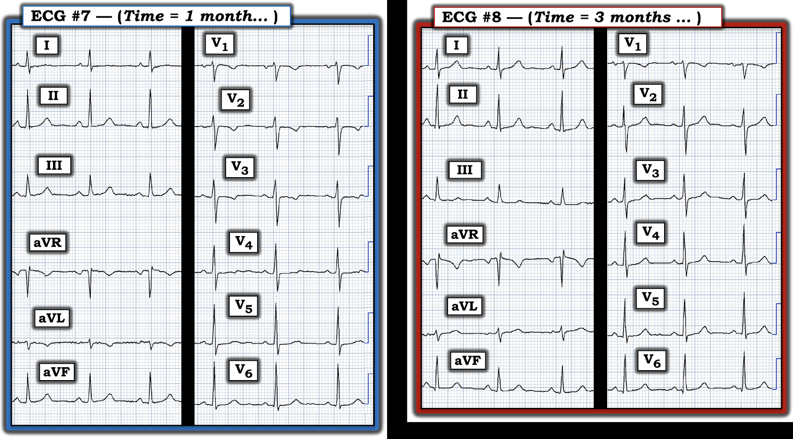